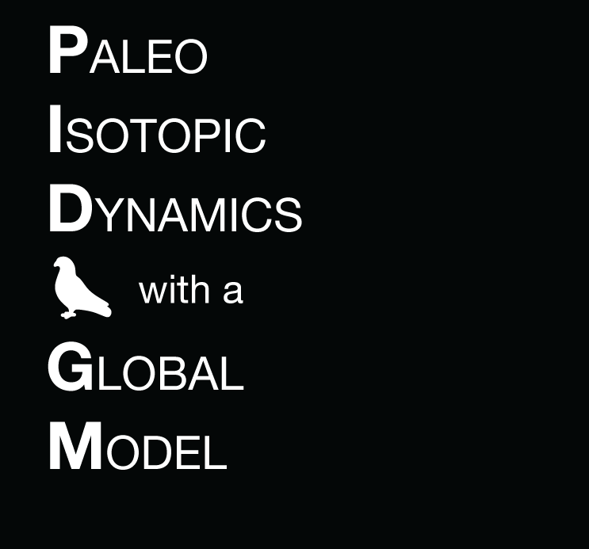

PIDGM
Home
(current)
GUI
Latitude:
Longitude:
Timescale:
5 years
10 years
20 years
50 years
Seasonality:
January-December
April-September
October-March
December-February
September-November
July-August
March-May
Modes of Variability:
Hadley Strength
Hadley Width NH
Hadley Width SH
ITCZ Width
ITCZ Location
ITCZ Strength
ITCZ Area
Trop. Indian SST
Trop. Pacific SST
Trop. Atlantic SST
Trop. N. Atlantic (TNA) SST
TNA - Trop. Mean SST
SST Gradient
Niño1.2 SST
Niño3 SST
Niño3.4 SST
Niño4 SST
Trans Niño SST
Indian Dipole Mode
El Niño Modoki
Trop. Indian SLP
Trop. Pacific SLP
Trop. Atlantic SLP
Trop. N. Atlantic (TNA) SLP
TNA - Trop. Mean SLP
SLP Gradient
Niño1.2 SLP
Niño3 SLP
Niño3.4 SLP
Niño4 SLP
PDO
Indian Basin Mode
AMOC
SOI
AMO
NAM
PNA
NH Sea Ice
SAM
SH Sea Ice
Trans Niño SLP
Vecchi 06
Bellomo '15 Walker
Bellomo '15 Vertical
NAO
You are limited to 1 timescale and 1 seasonality filter at a time. Figures may take up to several minutes to generate and download.
Info + Setup
This feature is currently under development.
Instructions
